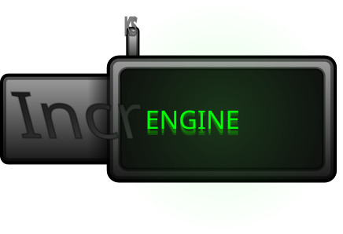

KS-Increngine

KS Increngine is an engine i made for easy incredibox modding in penguinmod that allows a ton of things built into it.
Download Below
Patch Notes
Polished achivements to work with dark mode and also behave more stable
Icons now show properly outside of debug. idk how i missed this before inital release...
Snappy UI Now works
[R] + [SHIFT] Now resets cloud variables
Chars and mute buttons were slightly tweaked. mainly chars now allows the editing of its info. i just forgot about this when making the category sprite system. Oops!
Modules are now off by default.
I removed the recording keybind [+] because of accidentally recording if typing in values
Code was cleaned up a bit
Increngine v0.9 Beta
I also apologize in advice if the engine is a bit confusing. it uses a lot of extensions and what not. keep extensions unsandboxed and open it in editor for it to properly load at least uncompiled